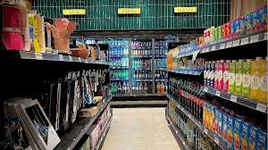
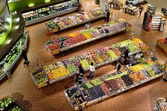
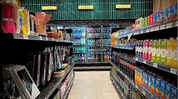
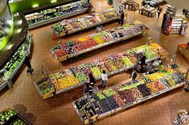

Veni a conocer nuestras ofertas en la nueva sucursal de Olavarria, Prov. Bs. As.¡¡Te esperamos!!
Más de 80 años cerca cada argentino y argentina.
Los primeros pasos fueron en el año 1937, en un momento de cambios y desafíos económicos en el país. La historia comienza con la visión emprendedora de una familia argentina que creía en la importancia de brindar productos de calidad a precios accesibles para la comunidad local. En sus inicios, era tan solo una modesta tienda de barrio que se caracterizaba por su atención personalizada y la frescura de sus productos. A medida que el negocio crecía, la familia fundadora se esforzaba por ampliar su oferta para satisfacer las necesidades cambiantes de sus clientes, convirtiéndose en un pilar indispensable en la comunidad Con el paso de los años se consolidó como un referente en la zona, destacándose por su compromiso con los productores locales, la variedad de productos frescos y el ambiente acogedor que ofrecía a sus visitantes. Los vecinos confiaban en este supermercado no solo por la excelencia de sus productos, sino también por el trato amable y familiar que recibían en cada visita.
Nuestra mision y valores
A lo largo de las décadas el supermercado enfrentó diversos desafíos y cambios en el mercado, adaptándose constantemente para seguir brindando un servicio de calidad a sus clientes. Siempre manteniendo su esencia de cercanía y compromiso con la comunidad, el supermercado se convirtió en un punto de encuentro para las familias, donde no solo se realizaban compras, sino que también se compartían momentos especiales. En la actualidad, es un referente en el sector minorista argentino, combinando la tradición con la innovación para ofrecer a sus clientes una experiencia única de compra. Su legado como uno de los supermercados pioneros en Argentina perdura, recordando siempre sus modestos inicios en 1937 y el espíritu emprendedor que lo llevó a convertirse en un lugar emblemático para muchas generaciones de argentinos.
 


